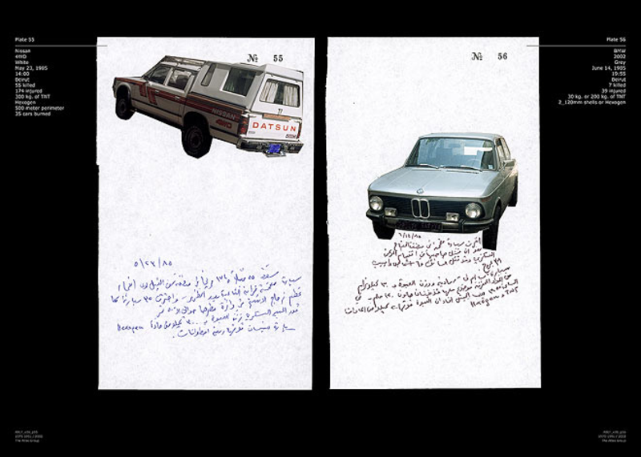
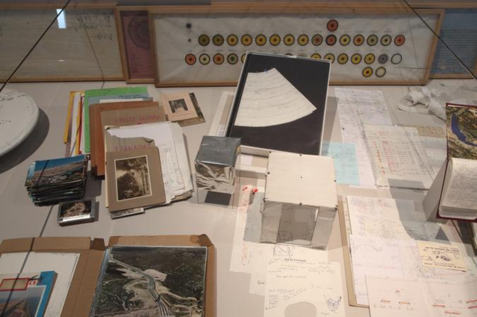

What is an atlas?
The atlas is a widely used literary form that usually groups maps, graphs and text in order to systematically present a specific subject. Halfway between scientific knowledge and popularization support1, there are thousands of different atlases that are intended for various audiences. Unlike the dictionary, the atlas does not aim at providing an exhaustive vision of a subject but rather to bring light by exposing the same subject in different ways.
“an atlas is hardly made of" pages "in the usual sense of the term: rather tables, boards where are arranged images, boards that we come to consult for a specific purpose or that we serials at leisure, allowing to wander our "will to know" from image to image and from plank to board" Georges Didi-Huberman2
Whether it is My first Atlas for 6-9 years or the Official Atlas of Patents of the INPI, all in common to offer different levels of reading. We do not read an atlas as we read a novel. We flip through it, we look at the maps and the images, we read that chapter, we put it down, we come back to it, we show it to other people, we cut out a map to paste it elsewhere.
As in the cinema3, the atlas proceeds to a montage of images that often already exist. Thanks to this editing, he produces unprecedented knowledge not only by writing texts, but also by the choices of juxtaposition and meetings he organizes. The atlas builds links in order to allow the reader's imagination to project itself into a problematic not in one fell swoop, but in successive touches.
Selected References
Below you will find a set of examples of atlases chosen from thousands of existing references, to reflect on how the atlases are designed, but also how the atlas object was used, both as a geographical and administrative tool, but also as a space for artistic and scientific exploration.
The Mercator Atlas (1589)
Gerardus Mercator (1589) - Atlas Sive Cosmographicae Meditationes by Fabrica Mundi and Fabricati Figura. (see the book)
The first card book using the term "Atlas" in its title. It was created by the famous scientist Mercator, to whom we owe the famous geographical projection that bears his name. The atlas includes maps of Europe and poles and was created for Catherine de Cleves who wanted to undertake a long journey around Europe. About half of the pages contain maps, the rest of the explanatory texts on places and territories. It can be noted that Mercator has never made geographical surveys but has relied on the writings of many correspondents.
The Underground Atlas of Paris (1855)
Underground Atlas of Paris (1855) - Fourcy (consult online)
The 19th century in Europe sees a new fact: the metropolitan city. Under the impetus of Napoleon III, Baron Haussman undertakes colossal work that will transform the city of Paris from top to bottom. The bureaucrats of the Second Empire embarked on major infrastructure projects, such as sewers or roads, to accommodate a traffic increasingly large. Numerous atlases are produced according to the topographic surveys, allowing the Paris metropolitan project to become more readable for the administration and real estate developers (Damme, 2015). These atlases play a decisive role in the emergence of this science that is now called urbanism.
The Mnemosyne Atlas (1927-1929)
The Mnemosyne Atlas (1927-1929) - Aby Warburg (presentation)
In December 1927, the art historian Aby Warburg undertakes to erect 40 wooden panels in the middle of his gigantic library. On each of them, he creates compositions of images, paintings, reproduction, text to which he gives each time a theme (astrology and mythology, archeological models, etc.) Within each panel are mixed genres and epochs to form a large fresco known as the Mnemosyne Atlas.
The Atlas Group (1989-2004)

The Atlas Group (1989-2004) - Walid Raad - http://www.theatlasgroup.org (lebanon)
The Atlas Group is a project by the artist Walid Raad that presents thirty years of war in Lebanon through a montage of literary and audiovisual archives both real and fictional. The fictional character of Dr. Fadl Fakhouri tells the war through testimonies and collected elements, such as photos of the 245 car bombs found in Lebanon. The artist uses the format of the atlas here to make not only visual but also informational montages between scientific authority and media invention.
The Atlas of Movements (2003)

Atlas of Movements (2003) - Christopher Fink (Book / Archive / Presentation)
Christopher Fink has for many years documented the relationship between space and time by documenting how our bodies move. His work is based on precise descriptions of "the experience of mobility". Photos, drawings, sound recordings, maps, sketches and diagrams: the artist records precisely his movements by multiplying the graphic experiments. Thus, it cuts step by step its walks, imagine notations systems for different times and activities, etc. Rather than proposing a unique approach, it offers us a vast archive of representations and measurements of movements.
The Archives of the Planet (1909-1931 / 2016) - Albert Kahn
Archives of the Planet (1909-1931 / 2016) - Albert Kahn (Site / Open Data)
The Archives of the Planet is a collection of over 4000 autochromes (ancestor of glass photography) collected by the wealthy French banker Albert Kahn. Passionate about the diversity of world cultures, Kahn commissioned hundreds of photographs of places and people far and wide around the globe. Begun in 1912 in the Department of Human Geography College de France, this great photographic collection has recently been published online under a free license. The General Council of Hauts-de-Seine has undertaken to create a map-based interface to view photos.
The Atlas of the Natural Regions (2017)
The Atlas of the Natural Regions (2017) - Eric Tabuchi & Nelly Monnier https://atlasrn.fr
The Atlas of the Natural Regions is a project initiated by a photographer and an artist with the aim of producing over 10 years fifty photographs in each of the 500 natural regions of France. Each region covers about ten square kilometers, bounded by natural geographical markers, such as mountains or streams. The creation of these 25,000 photographs is accompanied by regular publications on the site. At the same time, the artists keep a diary that explains the places and describes the conditions of the shots.
The Atlas of Cyberspace (2001)
Atlas of Cyberspace (2001) - Martin Dodge & Robert Kitchin (contents)
The Cyberspace Atlas of the English geographers Dodge and Kitchin is one of the first serious and systematic attempts at "cybergraphy". Popularized by the science fiction and writings of Gibson, cyberspace has gradually earned its acclaim with the arrival of the Internet. The challenge is not only to understand what is happening in the networks, but to show the porosities between supposed "virtual" worlds and the "real" world. The atlas lists a lot of maps and representations, but also a set of interfaces. It strikes with its futuristic aesthetic typical of the 2000s, with a strong trend for ballistic neon, and a clear desire to celebrate the new technology of the Internet (Desbois, 2011).
The Critical Atlas of the Internet (2016)
Critical Atlas of the Internet (2016) - Louise Druhle http://internet-atlas.net (lab)
Critical Atlas of the Internet is Louise Druhle, realized as part of her degree at ENSAD. He proposes to approach the question of the representation of the Internet in 15 themes and questions. For each question, Druhle drew a set of diagrams or 3D models, accompanied by quotes often from books discussing our relationship to the Internet. Designed as a website, the navigation offers a long scrolling vertical scroll to read question by question. Taking the multiple sizes and dimensions of our screens, the atlas has been printed in different sizes thanks to a suite of open-source tools "web to print" which allows to convert a web page into PDF.
Le dessous des cartes

Le dessous des cartes (1990-now) - ARTE / The Seven (site)
Le dessous des cartes is a French public educational program created by the geographer Jean-Christophe Victor in 1990. Each program lasting from 7 to 11 minutes follows the same format: presentation by the moderator of the topic of the day, a demonstration based on maps, figures or animation accompanied by voice-overs, then the end of the presenter. The program, which has been successful for the past 30 years, is based on rigorous cartographic representations and deals with often local topics (continents, regions or countries).
Atlas do Brasil (2008)
Chaves para a leitura do território paulista, H. Thery
The Atlas do Brasil shows how dynamics can be extrapolated into basic shapes that informs our representations of a territory. Extensive cartography are used to observe and identify spatial structures and their derivatives. The methodology is explained in details in this paper (in French).
The Atlas of Economic Complexity (2011)
The Atlas of Economic Complexity (2011) - Hausmann et al http://atlas.cid.harvard.edu
The Atlas of Economic Complexity is a work of Harvard researchers and MIT Media Lab that aims to explore economic relations between 128 countries according to a set of data and statistics on trade. The atlas provides for each country a detailed statistical sheet on its trade relations with other countries, as well as numerous maps and diagrams representing global trade. Published in 2011 in the form of a book, the atlas was nonetheless conceived as a web application for querying a central database and displaying graphs. Analyzes were then produced country by country before being compiled in the final book.
Our World in Data (2016-now)
Our World in Data (2016-now) - Max Roser https://ourworldindata.org
Our World in Data is an online publication by economist and historian Max Roser of Oxford University who wishes to present empirical evidence of changing living conditions in the world. The project is interested in documenting the implications of economic development around the world. Different analyzes are performed or commissioned to subject-by-subject specialists to cover a wide range of issues. All the data is available for download and the figures are freely licensed so that they can be easily re-used.
Cover credits : Adam Reeder4
-
Thomas, Ga√´tan. "Atlas, Or The Problem of the Scientific Imagination." Nonfiction.fr, October 23, 2012. https://www.nonfiction.fr/article-6165-atlas_ou_le_le_probleme_de_limagination_scientifique.htm.¬†↩
-
Didi-Huberman, Georges. Atlas ou le gai savoir inquiet: L‚Äô≈ìil de l‚Äôhistoire 3, Paris : Les √âditions de Minuit, coll. ‚ÄúParadoxe‚Äù, 2011. 384 p.¬†↩
-
Castro, Teresa. Cartographic Thinking Images. Cinema and Visual Culture, Lyon, Al√©as, 2011.¬†↩
-
Adam Reeder, Greek sculpture with iPod, 2016 - Wikipedia Commons¬†↩
{kind=link}